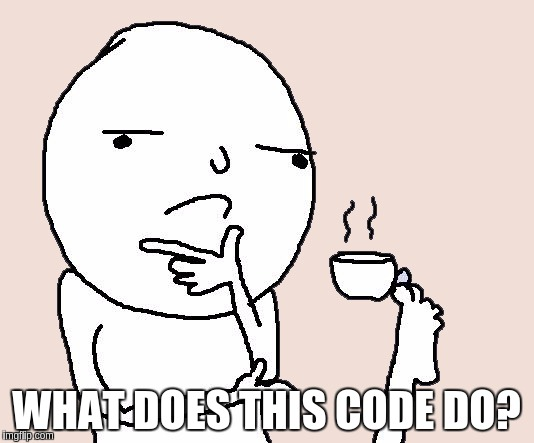
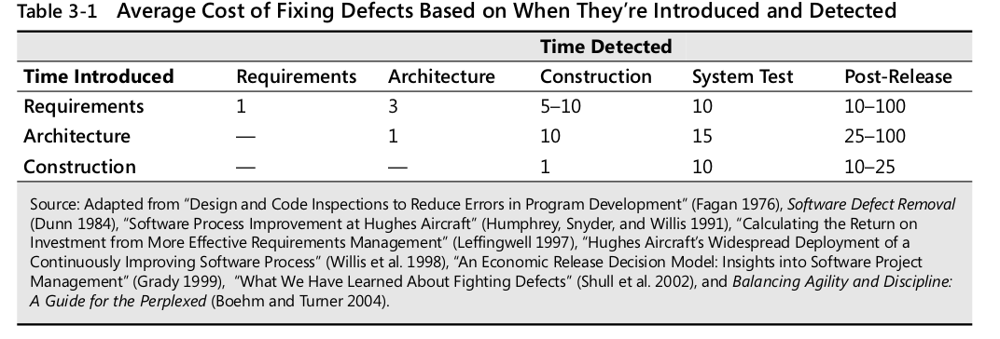
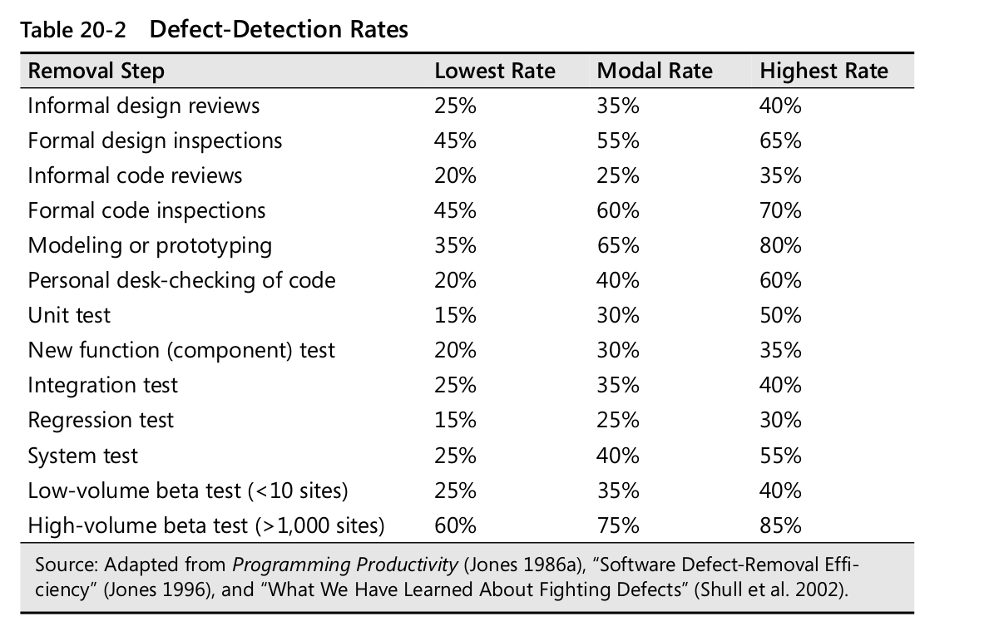

Levelling up as a developer
Best practices for improving code quality and avoid burnout
Gabriele Colombera /
@gabricom
PUG SONDRIO - 11 Settembre 2019
Fonti
- Code Complete - Steve McConnell
- Clean Code - Robert C. Martin
WHY?
Scrivete codice così ?

Oppure così ?
TRUTHS ABOUT CODING
- time reading > time writing
- Ti dimentichi il tuo codice in fretta
- I membri del tuo team pensano diversamente da te
- L'unica costante è il cambiamento
- Per essere un buon programmatore non basta saper scrivere codice che funzioni
CLEAN CODE SAVES TIME
Costruire software è difficile.
Attività
Analisi dei requisiti
Errori comuni
- Non sappiamo prendere le specifiche nel modo corretto
- Vogliamo iniziare subito a programmare e quindi passiamo subito al codice vero e proprio
- A volte il problema è manageriale ed è dovuto a una mancanza di conoscenza dell'ambito
E' fondamentale enfatizzare la qualità fin dall'inizio del progetto, anche imparare a prendere requisiti deve essere una skill che va raggiunta
Dedicare il tempo giusto in base al tipo di progetto su cui si deve lavorare.
Più si è avanti con il progetto più un requisito errato incide sul costo
Come fare quindi a redarre una lista di requisiti migliore possibile?
1Definizione del problema
>A problem definition defines what the problem is without any reference to possible solutions. It’s a simple statement, maybe one or two pages, and it should sound like a problem. The statement “We can’t keep up with orders for the Gigatron” sounds like a problem and is a good problem definition. The statement “We need to optimize our automated data-entry system to keep up with orders for the Gigatron” is a poor prob- lem definition. It doesn’t sound like a problem; it sounds like a solution.
The problem definition should be in user language, and the problem should be described from a user’s point of view. It usually should not be stated in technical com- puter terms.
Redazione di una lista di requisiti/specifiche del progetto
Requirements describe in detail what a software system is supposed to do, and they are the first step toward a solution.
Paying attention to requirements helps to minimize changes to a system after develop- ment begins. If you find a coding error during coding, you change a few lines of code and work goes on. If you find a requirements error during coding, you have to alter the design to meet the changed requirement. You might have to throw away part of the old design, and because it has to accommodate code that’s already written, the new design will take longer than it would have in the first place.
Alcuni elementi da considerare
- Program Organization
- Major Classes
- Data design
- Business Rules
- User Interface design
- Resource Management
- Security
- Performance
- Scalability
- Interoperability
- Internazionalization
- Input/Output
- Error Processing
The amount of time to spend on problem definition, requirements, and software architec- ture varies according to the needs of your project. Generally, a well-run project devotes about 10 to 20 percent of its effort and about 20 to 30 percent of its schedule to require- ments, architecture, and up-front planning (McConnell 1998, Kruchten 2000)
Key Points
The overarching goal of preparing for construction is risk reduction. Be sure your preparation activities are reducing risks, not increasing them. ■ If you want to develop high-quality software, attention to quality must be part of the software-development process from the beginning to the end. Attention to quality at the beginning has a greater influence on product quality than atten- tion at the end. ■ Part of a programmer’s job is to educate bosses and coworkers about the soft- ware-development process, including the importance of adequate preparation before programming begins. ■ The kind of project you’re working on significantly affects construction prereq- uisites—many projects should be highly iterative, and some should be more sequential. ■ If a good problem definition hasn’t been specified, you might be solving the wrong problem during construction. If good requirements work hasn’t been done, you might have missed important details of the problem. Requirements changes cost 20 to 100 times as much in the stages following construction as they do earlier, so be sure the requirements are right before you start programming. ■ If a good architectural design hasn’t been done, you might be solving the right problem the wrong way during construction. The cost of architectural changes increases as more code is written for the wrong architecture, so be sure the archi- tecture is right, too. ■ Understand what approach has been taken to the construction prerequisites on your project, and choose your construction approach accordingly.
Tecniche per migliorare la qualità
Ma il codice?
HOW TO LEVEL UP
TAKE YOUR TIME
- Refactor frequently
- After it works: look at your code and improve it
- Have no fear to throw things away
KEEP GRINDING
- Always question your code with you and others
- Keep studying
- Enjoy conferences and stuff
TAKE A BREAK
- Sometimes 20 minutes of relax are better than 2 hour of hard-work
CLEAN CODE
"Any fool can write code that a computer can understand. Good programmers write code that humans can understand. "
Martin Fowler
SOLID
Single responsibility principle
A class should only have one reason to change
interface Cart{
public function getItems();
public function addItem($item);
public function removeItem($item);
public function calculateTotal();
public function processPayment($account,$amount);
}
interface ProductCollection{
public function getItems();
public function addItem(Product $item);
public function removeItem(Product $item);
}
interface CartPaymentProcessor{
public function calculateTotal(ProductCollection $productCollection);
public function processPayment(AccountInterface $account, Amount $amount);
}
Open-closed principle
Software entities (classes, modules, functions, etc.) should be open for extensions, but closed for modification.
"A class should be easy to extend without changes"
That classes should be extended to change functionality, rather than being altered.
Liskov substitution principle
Objects should be replaceable by their subtypes without altering how the program works.
Interface Segregation Principle
Many client-specific interfaces are better than one general-purpose interface
Dependency inversion principle
classes should depend upon abstractions, not concretions. Essentially, don't depend on concrete classes, depend upon interfaces.
Meaningful naming
Use intention-revealing names
The name of a variable, function, or class, should answer all the big questions. It should tell you why it exists, what it does, and how it is used. If a name requires a com- ment, then the name does not reveal its intent.
Avoid disinformation
Don't call something it's not!
Make meaningful distinctions
Variable represent different things, and should be named to show that
Use pronunceable names
Use searchable names and use constant instead of numeric or string values
Class names should be nouns
Classes lead to objects which are things not actions
Example: Customer,Account,AddressParser,Cart,User,Authenticator
Method names should start with a verb
Methods are actions performed on and with things
Example: postPayment,deletePage,save,parseDocument
Pick one word per concept
Using synonyms for the same action, on different objects, is confusing
Example: fetch/retrieve/get ,
Add meaningful context and don't add context when is not needed
There are a few names which are meaningful in and of themselves—most are not. Instead, you need to place names in context for your reader by enclosing them in well-named classes, functions, or namespaces. When all else fails, then prefixing the name may be nec- essary as a last resort.
Funzioni
Small!
The first rule of functions is that they should be small. The second rule of functions is that they should be smaller than that.
Blocks and indenting!
This implies that the blocks within if statements, else statements, while statements, and so on should be one line long. Probably that line should be a function call. Not only does this keep the enclosing function small, but it also adds documentary value because the function called within the block can have a nicely descriptive name.
Do not use else, return before
Do one thing
If the names includes and or doesn't describe all the functionality well it's doing too much
One level of abstraction per function
Avoid switch
Use polymorphism instead
Use as less arguments as possible. Use objects and arrays when you need many arguments
The ideal number of arguments for a function is zero (niladic). Next comes one (monadic), followed closely by two (dyadic). Three arguments (triadic) should be avoided where possible. More than three (polyadic) requires very special justification—and then shouldn’t be used anyway.
Don't use flag arguments
lag arguments are ugly. Passing a boolean into a function is a truly terrible practice. It immediately complicates the signature of the method, loudly proclaiming that this function does more than one thing. It does one thing if the flag is true and another if the flag is false!
Avoid side-effects
Command Query separation
Functions should either do something or answer something, but not both. Either your function should change the state of an object, or it should return some information about that object. Doing both often leads to confusion
Use Exceptions instead returning error codes
Comments
Comments = bad code
The proper use of comments is to compensate for our failure to express ourself in code.If you need comments to understand what the code is doing then the code is poorly written.
"Good" comments
La formattazione del testo e l'importanza degli standard (CS-fixer)
Add vertical spaces between concepts
Order methods by depth
if method a depends on b and then c that is the order in which they should appear
Order methods by conceptual affinity
If two methods do similar things put them close together
Keep horizontal space short . max 120 char
Space between operators and assignment
Have team standards
PHP CS FIXER
Error Handling
Use exceptions rather than return codes
Write your try catch statement first
In a way, try blocks are like transactions. Your catch has to leave your program in a consistent state, no matter what happens in the try . For this reason it is good practice to start with a try - catch - finally statement when you are writing code that could throw exceptions. This helps you define what the user of that code should expect, no matter what goes wrong with the code that is executed in the try .